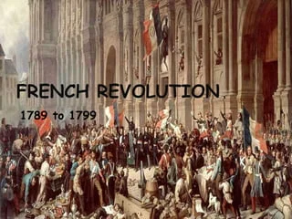
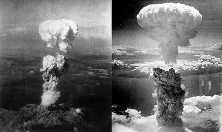

The Black Death was a bubonic plague pandemic occurring in Europe from 1346 to 1353. One of the most fatal pandemics in human history, as many as 50 million people perished, perhaps 50% of Europe's 14th century population. Bubonic plague is caused by the bacterium Yersinia pestis and spread by fleas.
The Black Death was the beginning of the second plague pandemic. The plague created religious, social and economic upheavals, with profound effects on the course of European history.
The origin of the Black Death is disputed. Genetic analysis points to the evolution of Yersinia pestis in the Tian Shan mountains on the border between Kyrgyzstan and China 2,600 years ago. The immediate territorial origins of the Black Death and its outbreak remain unclear, with some evidence pointing towards Central Asia, China, the Middle East, and Europe. The pandemic was reportedly first introduced to Europe during the siege of the Genoese trading port of Kaffa in Crimea by the Golden Horde army of Jani Beg in 1347. From Crimea, it was most likely carried by fleas living on the black rats that travelled on Genoese ships, spreading through the Mediterranean Basin and reaching North Africa, Western Asia, and the rest of Europe via Constantinople, Sicily, and the Italian Peninsula.
There is evidence that once it came ashore, the Black Death mainly spread from person-to-person as pneumonic plague, thus explaining the quick inland spread of the epidemic, which was faster than would be expected if the primary vector was rat fleas causing bubonic plague. In 2022, it was discovered that there was a sudden surge of deaths in what is today Kyrgyzstan from the Black Death in the late 1330s; when combined with genetic evidence, this implies that the initial spread may not have been due to Mongol conquests in the 14th century, as previously speculated.
French Revolution 1789-1799

The French Declaration of Rights
When the first rumors of political change in France reached American shores in 1789, the U.S. public was largely enthusiastic. Americans hoped for democratic reforms that would solidify the existing Franco-American alliance and transform France into a republican ally against aristocratic and monarchical Britain. However, with revolutionary change also came political instability, violence, and calls for radical social change in France that frightened many Americans. American political debate over the nature of the French Revolution exacerbated pre-existing political divisions and resulted in the alignment of the political elite along pro-French and pro-British lines. Secretary of State Thomas Jefferson became the leader of the pro-French Democratic-Republican Party that celebrated the republican ideals of the French Revolution. Secretary of the Treasury Alexander Hamilton led the Federalist Party, which viewed the Revolution with skepticism and sought to preserve existing commercial ties with Great Britain. With the two most powerful members of his cabinet locked in opposition, President George Washington tried to strike a balance between the two.
From 1790 to 1794, the French Revolution became increasingly radical. After French King Louis XVI was tried and executed on January 21, 1793, war between France and monarchal nations Great Britain and Spain was inevitable. These two powers joined Austria and other European nations in the war against Revolutionary France that had already started in 1791.
The United States remained neutral, as both Federalists and Democratic-Republicans saw that war would lead to economic disaster and the possibility of invasion. This policy was made difficult by heavy-handed British and French actions. The British harassed neutral American merchant ships, while the French Government dispatched a controversial Minister to the United States, Edmond-Charles Genêt, whose violations of the American neutrality policy embroiled the two countries in the Citizen Genêt Affair until his recall in 1794.
French Revolution's Terror Phase (1794): During the most violent phase of the French Revolution, known as the Terror, many foreigners in France, including Thomas Paine, were arrested. Paine's scheduled execution was averted due to the end of the Terror.
Federalist Concerns in the United States: Federalists in the U.S. were wary of revolutionary ideologies from France infiltrating American society, particularly as many French citizens settled in American cities and remained politically active.
Alien and Sedition Acts (1798): In response to tensions with France and fears of political dissent, the Federalist-controlled Congress passed the Alien and Sedition Acts, which aimed to curb political opposition and limit immigrant participation in politics.
Impact of the Acts: Instead of suppressing pro-French sentiment, the Acts backfired on the Federalists. They alienated swing voters, leading to Thomas Jefferson's victory in the 1800 presidential election.Although the French Revolution had ended its radical phase, Federalists in the United States remained wary of revolutionary ideology infiltrating the United States. Many French citizens, refugees from the French and Haitian revolutions, had settled in American cities and remained politically active, setting up newspapers and agitating for their political causes. A French spy, Victor Collot, traveled through the United States in 1796, noting the weaknesses in its western border. When a breakdown in diplomatic negotiations resulted in the Quasi-War with France, the Federalist-controlled Congress passed a series of laws known as the Alien and Sedition Acts, intended to curb political dissent and limit the political participation of immigrants by easing deportation and lengthening the time required for citizenship. A number of political radicals were arrested for sedition, including Congressman Matthew Lyon and newspaper editors James Thompson Callendar and William Duane. Many refugees, sensing American hostility, chose to return to France and Haiti since the political situation had temporarily calmed in both places.
Jefferson's Approach: Jefferson distanced himself from political radicals and appealed to political moderates, despite Federalist warnings that his election would bring revolution to the U.S.
Revolutionary Sentiment: While many Americans sympathized with the ideals of the French Revolution, they were cautious about implementing its most radical changes in the United States.
The Alien and Sedition Acts, originally intended to prevent a growth in pro-French sentiment, actually backfired for the Federalists. Taken aback by such extreme measures, swing voters in the presidential election of 1800 instead backed the pro-French Thomas Jefferson and his Democratic-Republican Party, instead of the Federalist John Adams, who was running for re-election as President. Adams had also alienated the anti-Revolutionary wing of his party by seeking peace with France, whose revolution had already been brought to a close by General Napoleon Bonaparte.
Despite Federalist warnings that electing Jefferson would bring revolution to the United States, Jefferson instead chose to distance himself from political radicals and win over political moderates. The revolution in France was over, and while many Americans voters sympathized with the revolution in the abstract, they did not want the revolution’s most radical changes put into effect in the United States.
The Vietnam War – 1955-1975.
Vietnam War, (1954–75), a protracted conflict that pitted the communist government of North Vietnam and its allies in South Vietnam, known as the Viet Cong, against the government of South Vietnam and its principal ally, the United States. Called the “American War” in Vietnam (or, in full, the “War Against the Americans to Save the Nation”), the war was also part of a larger regional conflict (see Indochina wars) and a manifestation of the Cold War between the United States and the Soviet Union and their respective allies.
At the heart of the conflict was the desire of North Vietnam, which had defeated the French colonial administration of Vietnam in 1954, to unify the entire country under a single communist regime modeled after those of the Soviet Union and China. The South Vietnamese government, on the other hand, fought to preserve a Vietnam more closely aligned with the West. U.S. military advisers, present in small numbers throughout the 1950s, were introduced on a large scale beginning in 1961, and active combat units were introduced in 1965. By 1969 more than 500,000 U.S. military personnel were stationed in Vietnam. Meanwhile, the Soviet Union and China poured weapons, supplies, and advisers into the North, which in turn provided support, political direction, and regular combat troops for the campaign in the South. The costs and casualties of the growing war proved too much for the United States to bear, and U.S. combat units were withdrawn by 1973. In 1975 South Vietnam fell to a full-scale invasion by the North.
The human costs of the long conflict were harsh for all involved. Not until 1995 did Vietnam release its official estimate of war dead: as many as 2 million civilians on both sides and some 1.1 million North Vietnamese and Viet Cong fighters. The U.S. military has estimated that between 200,000 and 250,000 South Vietnamese soldiers died in the war. In 1982 the Vietnam Veterans Memorial was dedicated in Washington, D.C., inscribed with the names of 57,939 members of U.S. armed forces who had died or were missing as a result of the war. Over the following years, additions to the list have brought the total past 58,200. (At least 100 names on the memorial are those of servicemen who were actually Canadian citizens.) Among other countries that fought for South Vietnam on a smaller scale, South Korea suffered more than 4,000 dead, Thailand about 350, Australia more than 500, and New Zealand some three dozen.
Vietnam emerged from the war as a potent military power within Southeast Asia, but its agriculture, business, and industry were disrupted, large parts of its countryside were scarred by bombs and defoliation and laced with land mines, and its cities and towns were heavily damaged. A mass exodus in 1975 of people loyal to the South Vietnamese cause was followed by another wave in 1978 of “boat people,” refugees fleeing the economic restructuring imposed by the communist regime. Meanwhile, the United States, its military demoralized and its civilian electorate deeply divided, began a process of coming to terms with defeat in what had been its longest and most controversial war. The two countries finally resumed formal diplomatic relations in 1995.
Atomic bombings of Hiroshima and Nagasaki

On 6 and 9 August 1945, the United States detonated two atomic bombs over the Japanese cities of Hiroshima and Nagasaki. The bombings killed between 129,000 and 226,000 people, most of whom were civilians, and remain the only use of nuclear weapons in an armed conflict. Japan surrendered to the Allies on 15 August, six days after the bombing of Nagasaki and the Soviet Union's declaration of war against Japan and invasion of Japanese-occupied Manchuria. The Japanese government signed the instrument of surrender on 2 September, effectively ending the war.
Operation Centerboard
Part of the Pacific War of World War II
Two aerial photos of atomic bomb mushroom clouds, over two Japanese cities in 1945
Atomic bomb mushroom clouds over Hiroshima (left) and Nagasaki
Type
Nuclear bombing
Location
Hiroshima and Nagasaki, Japan
Date
6 and 9 August 1945
Executed by
Manhattan Project
509th Composite Group: 1,770 U.S.
Casualties
Hiroshima:
70,000–126,000 civilians killed
7,000–20,000 soldiers killed
12 Allied prisoners of war
Nagasaki:
60,000–80,000 killed (within 4 months)
150+ soldiers killed
8–13 Allied prisoners of war
Total killed:
129,000–226,000
In the final year of World War II, the Allies prepared for a costly invasion of the Japanese mainland. This undertaking was preceded by a conventional bombing and firebombing campaign that devastated 64 Japanese cities. The war in the European theatre concluded when Germany surrendered on 8 May 1945, and the Allies turned their full attention to the Pacific War. By July 1945, the Allies' Manhattan Project had produced two types of atomic bombs: "Little Boy", an enriched uranium gun-type fission weapon, and "Fat Man", a plutonium implosion-type nuclear weapon. The 509th Composite Group of the United States Army Air Forces was trained and equipped with the specialized Silverplate version of the Boeing B-29 Superfortress, and deployed to Tinian in the Mariana Islands. The Allies called for the unconditional surrender of the Imperial Japanese armed forces in the Potsdam Declaration on 26 July 1945, the alternative being "prompt and utter destruction". The Japanese government ignored the ultimatum.
The consent of the United Kingdom was obtained for the bombing, as was required by the Quebec Agreement, and orders were issued on 25 July by General Thomas Handy, the acting chief of staff of the United States Army, for atomic bombs to be used against Hiroshima, Kokura, Niigata, and Nagasaki. These targets were chosen because they were large urban areas that also held militarily significant facilities. On 6 August, a Little Boy was dropped on Hiroshima. Three days later, a Fat Man was dropped on Nagasaki. Over the next two to four months, the effects of the atomic bombings killed 90,000 to 146,000 people in Hiroshima and 60,000 to 80,000 people in Nagasaki; roughly half occurred on the first day. For months afterward, many people continued to die from the effects of burns, radiation sickness, and injuries, compounded by illness and malnutrition. Though Hiroshima had a sizable military garrison, most of the dead were civilians.
Scholars have extensively studied the effects of the bombings on the social and political character of subsequent world history and popular culture, and there is still much debate concerning the ethical and legal justification for the bombings. Supporters claim that the atomic bombings were necessary to bring an end to the war with minimal casualties; critics believe that the bombings were unnecessary for the war's end and a war crime, and highlight the moral and ethical implications of the intentional nuclear attack on civilians.
Jallianwala Bagh massacre
The Jallianwala Bagh massacre, also known as the Amritsar massacre, took place on 13 April 1919.
A large, peaceful crowd had gathered at the Jallianwala Bagh in Amritsar, Punjab, British India, during annual Baishakhi fair, to protest against the Rowlatt Act and the arrest of pro-independence activists Dr. Saifuddin Kitchlew and Dr. Satya Pal.
In response to the public gathering, the temporary brigadier general R. E. H. Dyer, surrounded the people with his Gurkha and Sikh infantry regiments of the British Indian Army. The Jallianwala Bagh could only be exited on one side, as its other three sides were enclosed by buildings.
After blocking the exit with his troops, he ordered them to shoot at the crowd, continuing to fire even as the protestors tried to flee. The troops kept on firing until their ammunition was exhausted. Estimates of those killed vary from 379 to 1,500 or more people and over 1,200 other people were injured of whom 192 were seriously injured. Britain has never formally apologised for the massacre but expressed "deep regret" in 2019.
The massacre caused a re-evaluation by the Imperial British military of its role when confronted with civilians to "minimal force whenever possible", although the British Army as an organisation was not directly involved in the massacre, the British Indian Army was a separate organisation. Later British military actions during the Mau Mau rebellion in the Kenya Colony have led historian Huw Bennett to comment that the new policy could sometimes be put aside.
The army was retrained and developed less violent tactics for crowd control. The level of casual brutality, and lack of any accountability, stunned the entire nation,resulting in a wrenching loss of faith of the general Indian public in the intentions of the United Kingdom.The attack was condemned by the Secretary of State for War, Winston Churchill, as "unutterably monstrous", and in the UK House of Commons debate on 8 July 1920 Members of Parliament voted 247 to 37 against Dyer. The ineffective inquiry, together with the initial accolades for Dyer, fuelled great widespread anger against the British among the Indian populace, leading to the non-cooperation movement of 1920–22.
Some historians consider the episode a decisive step towards the end of British rule in India.
Thank you
About Us
Contact Us
Advertise with Us
Privacy policy
Terms & Conditions
For any feedback or complaint, email to:zamzoo51@gmail.com
TimeWarp Publishing is a non-profit company registered in the United Kingdom.
TimeWarp Foundation is a non-profit organization registered in Canada.
Some Rights Reserved (2009-2024) under Creative Commons Attribution-NonCommercial-ShareAlike license unless otherwise noted.
About Us
SIVARAJ B.Tech Computer Science and Engineering
KRISHNA KUMAR B.Tech Computer Science and Engineering
PRAVIN B.Tech Computer Science and Engineering
SENTHAMIZHARAN B.Tech Computer Science and Engineering

.jpg)
.jpg)